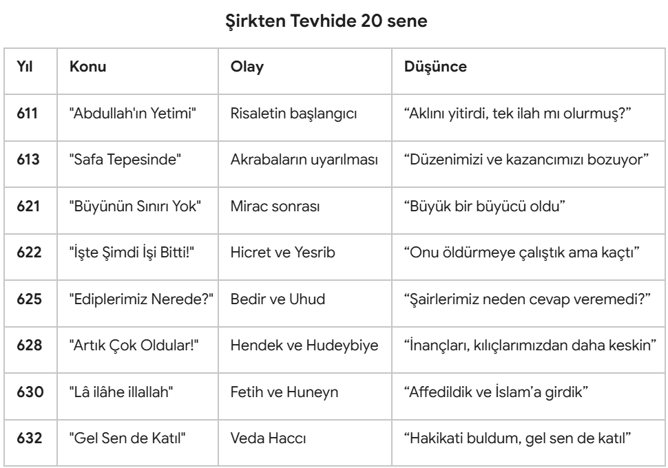

Peygamber Efendimizin 23 yıllık tebliğ hikayesini Kur’ân'ın ve sahabenin anlattığı gibi biliyoruz. Acaba aynı olayları müşriklerin ağzından dinlemek nasıl olurdu? Onların risalete, vahye ve peygamberliğe bakışları nasıldı? Neden tebliği hemen kabul edemediler, onlara hakim olan büyük engeller neydi? O dönemi aristokrat ve müşrik bir Mekke soylusunun kaleminden okumak, edebi ve tarihi açıdan derin bir perspektif sunuyor.
Karakterimizi kurgularken, dönemin Mekke aristokrasisine has o sarsılmaz kibri ve gelenekçi tutumu ön plana çıkardık. Bu sert kabuğun altına, yakın akrabasına karşı duyduğu hüzünlü ve şaşkın bir acıma duygusunu da ilave ettik. Bu hayalî mektuplar, Şam’ın verimli topraklarında oturan ve sadece yılda birkaç kez ticaret kervanlarıyla haberleşilen kadim bir dosta Mekke'den yazılıyor.
Elbette bu mektupların tarihî süreci eksiksiz yansıtmak gibi bir iddiası yoktur. Ancak seçilen dönüm noktaları üzerinden; siyer kaynaklarında yıllardır okuduğumuz ve kanıksadığımız hakikatlerin, karşı taraftaki bir müşrik zihninde nasıl bir yankı bulduğunu, hangi sosyolojik ve psikolojik dirençlerle algılandığını anlamaya ve hissettirmeye çalıştık. Medine döneminde verilen miladi tarihler kesin, hicret öncesi ise yaklaşıktır.
Kurgu ve Metin: M Akif Eyler
Yapay Zeka Katkısı: Gemini
Yıl: 611, Risaletin ikinci yılı
Dostum Kays'a ve Şam'ın serin, bereketli ovalarına, Mekke'nin simsiyah ve sımsıcak taşlarından selam olsun. Burada işler bildiğin gibi değil kardeşim. Bir süredir kervanların ve panayırların neşesini kaçıran hüzünlü bir hadise yaşanıyor. Bizim Kureyş'in göbeğinde, dedelerimizin kucağında büyümüş delinin biri çıktı ortaya. Atalarımızın asırlardır hürmet ettiği, Kâbe'nin gölgesinde bizleri koruyan ilahlarımızı kötülüyor. Bize "Yolunuz batıl, taptıklarınız taştan ibaret" demeye cüret ediyor. Güya kendisine gökten bir melek gelmiş de bir kitap getirmiş... Sen de bilirsin ki Melekler ancak yüce varlıklardır; eğer bu şehre bir elçi veya bir mesaj gelecek olsaydı, Mekke'nin ve Taif'in en zengin, en itibarlı soyluları, mesela amcam Ebul-Hakem1 dururken Abdullah'ın yetimine mi kalırdı bu iş?
İşin üzücü tarafı ne biliyor musun Kays? Adam yabancımız değil ki; dedemin torunu... Babası Abdullah benim babamın can dostuydu. Çok iyi adammış, ama ömrü yetmedi, oğlunu kucağına bile alamadı. Gözümüzün önünde büyüdü; akıllı, terbiyeli, dürüst bir çocuktu. Beraber oynadık, birlikte büyüdük, bunca yıl bir yalanını, bir hilesini görmedik. Aramızda bir anlaşmazlık çıksa ona danışır, en kıymetli eşyamızı gözümüz kapalı ona emanet ederdik. Ne olduysa Hira'daki inzivadan sonra oldu. Yalnızlık zihnini bulandırdı, yolunu şaşırdı zavallı.
Aklın alacağı iş değil Kays! "Tek bir ilah var" deyip duruyor. Tek ilah bütün bu evrene nasıl yetsin, her şeye nasıl yetişsin? Biz yağmur için bir puta, savaş kazanmak için ayrı birine, rızık ve ticaret için başka birine yalvarıp kurban keseriz. Bütün bu işleri tek güce nasıl yükleriz? Atalarımızdan gördüğümüz düzeni bu cümleyle yok edeceğini sanıyor.
Şimdi etrafına birkaç yoksulu, köleyi ve delikanlıyı toplamış, meclislerde bizimle tartışmaya kalkışıyor. Soylu bir aileden geldiği için kimse sert bir müdahalede bulunmak istemiyor ama atalarımızın dinine uzanan bu dil, yakında şehirde büyük bir huzursuzluk doğuracak gibi. Aklını başından alır da bu sevdadan vazgeçer umuduyla bekliyoruz.
Yıl: 613, "Akrabalarını uyar"
Kardeşim Kays, Şam kervanından haberini aldım, şükürler olsun. Lakin Mekke'de sular bir türlü durulmuyor. Bizim yeğenin durumu her geçen gün daha da karmaşık bir hal alıyor. Artık sadece ilahlarımıza hakaret etmekle kalmıyor; bizi Nuh'un tufanıyla, çölün kumları altında yok olup giden o azametli İrem şehriyle, taşa dönüştüğü söylenen eski kavimlerle korkutuyor. Dinlerken insan ister istemez bir ürperti duyuyor, yalan yok. Zira öyle güzel ve ritmik konuşuyor ki, insan şair veya büyücü demeden edemiyor. Kendisinden önceki bütün elçilerin de aynı şeyi söylediğini iddia ediyor; ona uymazsak biz de onlar gibi helak olup gidecekmişiz. Yazık, güzelim zekasını bu hülyalarla tüketmiş, iyice aklını yemiş...
Geçen gün bizi Safa Tepesinin dibinde topladı. "Şu dağın arkasından bir düşman ordusu geliyor desem bana inanır mısınız?" diye sordu. Hepimiz "Evet, senin hiç yalan söylediğini görmedik" dedik. İşte o tatlı sözlerin arkasından yine kehanetleri, tehditleri sıralamaya başladı. Şehrin en muteber adamlarını, tüccarlarını ayağına çağırıp saçmaladı. En önce kendi amcaları öfkelendi; Abdüluzza2 açıkça yüzüne karşı bağırdı, hakaret etti.
Şimdi şehir ikiye bölünmüş durumda. Bir yanda babalarının dinini korumaya çalışan bizler, diğer yanda onun bu şiirlerine kanıp peşinden giden bir avuç çaresiz ayak takımı. Soylular olarak ticaretin ve düzenin bozulmasından çok rahatsızız. Sanırım artık ona sadece "aklı karışmış bir çocuk" muamelesi yapamayacağız.
Bu adam bizim ekmeğimizle, itibarımızla oynuyor! Her yıl panayırlarda Arabistan'ın dört bir yanından gelen kabileler Kâbe'deki bu putlar sayesinde Mekke’ye akın ediyor, kurbanlar kesiliyor, ticaret canlanıyor, ceplerimiz ve midelerimiz doluyor. Putlar olmazsa simsiyah taşların ortasındaki Kâbe’ye kim gelip neye hürmet edecek? Kendi elimizle altın yumurtlayan tavuğu kesmemizi istiyor! Adam sadece putlarımızla uğraşsaydı ya... Orada kalmadı, kadınların ve kölelerin haklarından bahsediyor! Daha neler duyacağız, belki develerin ve ağaçların haklarına kadar gidecek konu...
Yıl: 621, Mirac sonrası
Dostum Kays, bu sana yazdığım en inanılmaz mektup olacak. Yok artık, bu kadarı da fazla! Bizimki dün sabah Kâbe'nin yanında ortaya çıktı ve bir gecede Mekke'den kalkıp Mescid-i Aksa'ya gidip geldiğini iddia etti. Biliyorsun, bizim kervanlar o yolu bir ayda gidiyor, bir ayda dönüyor. Ama gel gör ki, burada onun bu masalına bile gözü kapalı inananlar, "O söylediyse doğrudur" diyenler var. Bunca yıldır arkadaşız, sen benim için bunu der miydin? Kimse diyemez! Ne demek ya, bir insanın her dediği doğru olmaz ki, kesin biraz yalan bulaşır. Bunun yalanları da bir gün ayağına dolaşacak. Bazen şöyle dua ediyoruz: "Allah'ım, dedikleri doğruysa başımıza taş yağdır!"3 Taş falan yağmadı, demek ki yalancı!
İşin daha da ötesi var: Güya gece sadece Kudüs'e gitmekle kalmamış, göklere yükselmiş, Cennet'i ve Cehennem'i gözleriyle görmüş! Meleklerle konuşmuş, ilahının huzuruna çıkmış... Şehirdekiler haklı olarak onunla dalga geçti, "Eğer gerçekten gittiysen Kudüs'teki mabedi anlat bize" dediler. Tüccarlar olarak mabedin kapılarını, sütunlarını tek tek sormaya başladık. Adam hepsini birer birer, en ince ayrıntısına kadar kusursuzca tarif etti! Gözlerimizle görmesek inanmazdık.
Biliyorsun, üç yıl kadar oluyor, kış kervanıyla Şam'a gelip seninle iki gün görüşmüştüm. Gidiş ve dönüş yolunda Kudüs'e de uğramıştım, şu meşhur Süleyman Mescidini görmek için. Sanki bugüne hazırlık olsun diye dikkatle inceledim. Adam bütün sorularıma doğru cevap verdi. Cinlerle mi konuşuyor, anlamadım! Açıkça görüyoruz ki, büyük bir büyücü olmuş. Gözümüzün içine bakarak zihnimizi büyülüyor, hiç görmediği yerleri gözünün önüne getirip anlatıyor. Bunu nasıl yaptı bilmiyorum ama Mekke'de artık hiçbir şey eskisi gibi olmayacak. İşin sonu nereye varacak, doğrusu kestiremiyorum.
Yıl: 622, Hicret ve Yesrib
Dostum Kays, sana bu mektubu zihnim hâlâ öfke ve şaşkınlıkla çalkalanırken yazıyorum. Tahammül sınırımız çoktan aşıldı. Şehrin önde gelenleriyle toplanıp bu fitneyi kökünden kazımaya karar verdik. Her kabilenin en gözü pek delikanlılarından oluşan bir takım kurduk; ben de başlarındaydım. Amacımız, kapısına dikilip çıktığı anda hep birlikte kılıçlarımızı saplamaktı. Böylece sorumluluk tek bir kabileye yüklenmeyecek, Haşimoğulları kan davasına girişemeyecekti. Gece kapısının önünde pusuda bekledik. Ancak karanlıkta gözümüzün önünden nasıl süzülüp geçti anlamadık! Yemin ederim kapıdaydık, bir çıtırtı bile duymadık. İçeri girdiğimizde yatağında genç kuzeni Ali yatıyordu. Sanki gözlerimize kalın bir perde çekildi, yanı başımızdan geçip gitti de hiçbirimiz fark edemedik; yine o büyüyle bizi kör etti!
Sabah olunca hemen en mahir iz sürücüleri topladık. Çölün sıcağında sürdüğümüz izler bizi Sevr Dağındaki bir mağaranın ağzına kadar götürdü. Ancak mağaranın girişinde bir örümcek ağı ve yuva yapmış bir güvercin vardı. Şehrin büyükleri "içine giren olsaydı bu ağ kopar, bu kuş uçardı" diyerek geri döndüler. Böylece ellerimiz boş Mekke'ye çekildik. İz sürücüler haklıysa, arkadaşı Abdülkâbe4 ile Yesrib yollarına düşmüş...
Yine de içim rahat. Galiba gerçekten Yesrib'e gitmiş. Orada Taif'ten çok daha sert karşılanacaktır. Evs ve Hazreç kabileleri Arapların en kanlı, en kavgacı insanlarıdır; yıllardır birbirlerini yer dururlar. Dışarıdan gelen yabancı bir gence mi baş eğecekler? İşte şimdi işi tamamen bitti, Kays! Bu kabileler mutlaka onun hakkından gelirler, elimizi kirletmeye gerek kalmadı.
Yıl: 625, Bedir ve Uhud
Sevgili Kardeşim, Mekke hâlâ matem elbisesini çıkarabilmiş değil. Geçen yıl Bedir'deki o feci hezimetten sonra evlerimizden ağıtlar eksilmedi. Ebul-Hakem de dahil Mekke'nin en soylu adamlarını, cansız olarak o çamurlu kuyularda bıraktık. İçten içe ilk kez derin bir korku duyuyorum. Bu yıl intikam hırsıyla toplandık; Uhud Dağının eteklerinde onlarla tekrar karşılaştık. Süvarilerimiz okçularının durduğu o tepeyi arkadan sarınca onları dağıttık, hatta yeğenimizi yaraladık. Ancak anlamadığım bir şey var: Adamları ölümden hiç korkmuyor! Tepedeki okçular "Kazandık!" diyerek yerlerinden ayrılmasaydı, biz o gün baştan kaybedecektik. Bu adamların direncinde çözemediğim, kehanetle açıklanamayacak gizemli bir güç var.
Medine’nin halkına akıl sır erdiremiyorum Kays! Bunlar yüz yıldır süren kan davaları yüzünden birbirini kırıp geçiriyordu. Yüzlerini görmeye bile dayanamayan bu düşmanlara ne oldu da hepsi birer can dostu kesildi5, ekmeklerini ve evlerini paylaşıyorlar? Büyüyle falan olacak iş değil. Aralarındaki o düşmanlığı bir gecede neyin söküp attığını düşündükçe aklımı kaçırıyorum.
Asıl zihnimi kurcalayan ne biliyor musun? Yıllardır Ukaz panayırında en muazzam şiirleri dizen ediplerimiz, şairlerimiz nerede? Neden bir şairimiz çıkıp da onun getirdiği bu sözlere denk bir şiirle cevap veremiyor? Neden onu kelimelerle susturamayıp kaba kılıçlara, kanlı savaşlara mecbur kaldık? Panayırın en büyük hatipleri bile onun okuduğu ritmik cümleler karşısında dut yemiş bülbüle dönüyor. Bu çaresizlik beni kılıçlardan daha çok korkutuyor.
Buna hiç inanmayacaksın ama Yesrib'den gelen haberler daha da garip. Adam içkiyi, kumarı, şans oklarını tamamen yasaklamış! Bunlar olmadan çölün kahrı çekilir mi, yaşanır mı? Haberi alan müslümanlar evlerindeki bütün şarap küplerini sokaklara dökmüşler, Medine sokaklarında şarap dere gibi akmış. Bir cümleyle koca bir şehrin alışkanlığını nasıl söküp atabilir? Bu gidişle ailemize, malımıza, soframıza, yatağımıza, belki mirasımıza bile karışacak...
Yıl: 628, Hendek ve Hudeybiye
Dostum Kays, çölün kumları bile çaresizliğimize şahitlik ediyor. Bu mesele artık sadece Kureyş'in sorunu olmaktan çıktı. Önceki sene bütün kabileleri, çölün en güçlü savaşçılarını etrafımıza toplayıp Yesrib'in üzerine yürüdük. Amacımız bu işi kökten bitirmekti. Şehrin önüne vardığımızda ne görelim? Önümüze kocaman bir hendek kazmışlar! Arap geleneklerinde hiç görülmemiş bir acem taktiği... Haftalarca o çukurun önünde çakılı kaldık. Yiyeceğimiz tükendi, atlarımız telef oldu. En nihayetinde öyle korkunç bir fırtına çıktı ki; çadırlarımızı söktü, kazanlarımızı devirdi, gözlerimizi kör etti. Görünmeyen güçler bunlara yardım mı ediyor nedir, perişan halde geri döndük.
Şimdi de kalkmışlar, güya silahsız olarak Mekke'ye gelip Kâbe'yi ziyaret edeceklerini söylüyorlar. Hudeybiye denen yerde yollarını kestik. Atalarımızın kutsal mabedine girmelerine asla izin veremezdik! Bizi çok zorladılar ama nihayetinde onlara çok ağır maddeler içeren bir anlaşma imzalattık. "Bizden size kaçanı geri vereceksiniz, sizden bize kaçanı vermeyeceğiz" dedik, onu bile kabul ettiler.
Ağır şartlarımızı sessizce kabul edip boyunları bükük, kös kös geri döndüler. Şehrin soyluları olarak zafer kazandığımızı sanıyoruz ama içimde garip bir sıkıntı var. O silahsız topluluğun gözlerindeki inanç, bizim kılıçlarımızdan çok daha keskin görünüyordu. Gerçekten artık çok oldular ve sınırları zorluyorlar.
Yıl: 630, Fetih ve Huneyn
Muhterem Kardeşim, sana bu satırları Kâbe'nin gölgesinde, gözyaşları içinde yazıyorum. Geçen ay bir gece Mekke'de, dağların arkasından sayısız meşale göründü. On bin kişilik bir ordu Mekke kapılarına dayanmıştı! Yıllardır eziyet ettiğimiz, evlerinden sürdüğümüz, kanlarını döktüğümüz adamlar şehrimize giriyordu. Bütün Mekke dehşet içindeydi; intikam kılıçlarının çıkacağını, erkeklerin katledileceğini, kadınların köle yapılacağını sanıyorduk. Doğrusu, biz olsaydık hakikaten öyle yapardık. Korkudan evlerimize kapandık, ecelimizi beklemeye başladık.
Başını devesinin hörgücüne eğmiş, sonsuz bir tevazu ile Kâbe'ye girdi. Bizi tavaf alanında topladı. "Şimdi size ne yapmamı beklersiniz?" diye sordu. Biz başımızı öne eğip "Sen kerim bir kardeş, kerim bir kardeş oğlusun" dedik. O an gözlerinin içine baktım Kays... O gözlerde ne öfke vardı ne de kin. "Bugün size kınama yoktur6, hepiniz serbestsiniz!" dedi. Bir anda bütün o kibir kulelerim, atalarımın dinine duyduğum taassup yerle bir oldu. Gururum kırıldı, kalbim mum gibi eridi.
Kendime sormaktan kaçtığım soruyu bugün ilk defa sordum... Mekke'nin fethindeki davranışını görünce, içimde yıllardır taşıdığım direnç kırıldı; artık onun haklı olduğundan şüphem kalmadı. Yıllarca "deli" dedik, "şair", "büyücü" dedik... Oysa o sadece hakikatin elçisiymiş. Bugün Kâbe'nin etrafındaki o cansız, taş putlar bir bir devrilip kırılırken ben de putları terk edip Allah'a hamd ile secde ettim. Yıllar sonra ilk kez ruhumun nefes aldığını hissettim. Ancak hemen ardından gelen Huneyn seferinde yine bocaladık.
Gurur ve alışkanlıklar bir günde kaybolmuyor... İslam’ı kabul eden bizler, Huneyn Vadisinde hevesle orduya katıldık. Bu kez kalabalığımıza, sayıca üstünlüğümüze güvendik; "Bizi artık kimse yenemez" dedik. Ama ok yağmuru başlayınca o koca ordu bir anda darmadağın oldu. İşte o gün bir kez daha anladım ki: Zafer ve başarı kalabalıkta, kılıçta, parada değil; yalnızca Allah’a teslim olmaktaymış. O çalkantıda yine peygamberin metaneti ve çağrısıyla toparlandık. Sallallâhu ‘aleyhi vesellem...7
Yıl: 632, Veda Haccı
Aziz ve Kadim Dostum, gönderdiğin son haberde "Bana artık o adamın dininden bahsetme" demişsin. Ama seni sevdiğim için yazıyorum, çünkü senin de bu yolda şereflenmeni her şeyden çok isterim. Geçenlerde Bizans'ın kocaman bir ordu ile üzerimize geldiği haberi çıkınca sefere çıktık. Kavurucu çöl sıcağında, kıtlık içinde günlerce yol aldık. Tebük yakınlarında bekledik, Romalılar karşımıza çıkmadı, savaşmadan geri döndük. O sefere geçerli bir mazereti olmadan katılmayan üç sahabenin halini gördüm; Allah'ın Elçisi onları toplumdan tecrit etti, kardeşleri ve eşleri bile yüzlerine bakmadı. Tâ tevbelerinin kabul edildiğine dair ayetler inene kadar... Bunca yıldır çok memleket gördüm Kays. Ama insanların birbirine böyle bağlanmasını hiçbir yerde görmedim.
En son onunla birlikte Hacca katıldım. Arafat'ta yüz binden fazla insana hitap ederken sesini dinledim. “Arap'ın Arap olmayana, beyazın siyaha bir üstünlüğü yoktur; üstünlük ancak takvadadır” derken gözyaşlarımı tutamadım. Kan davalarımızdan, insanların birbirinin canına ve malına el uzatmasından söz etti. Yıllardır normal sandığımız nice şeyi, sanki ilk kez duyuyormuşuz gibi önümüze koydu. Konuşmasının sonunda göğe bakıp “Şahit ol ya Rab!” derken, veda ettiğini, artık sonun yaklaştığını hepimiz hissettik ve içimiz yandı.
Bunca yıl sana Mekke'nin soylularından biri olarak yazdım, o kibirli adam gitti, yerine hakikati bulan bir kardeşin geldi. Bu davanın önünde hiçbir güç duramaz. Ordularımız çok yakında Kudüs'e de, Şam'a da girecektir. Gözlerini ve kalbini daha fazla kapatma; ya Medine'ye gel ya da Şam'da bu çağrıya kulak ver. Gel, sen de bu nura katıl...
1 "Hikmetin Babası" olarak anılırken, İslam düşmanlığı sebebiyle "Cehaletin Babası" oldu.
2 "Uzzâ'nın kulu" anlamındaki bu isim, bir surenin adında "Alevin Babası" (Ebû Leheb) oldu.
3 Enfâl Suresi, 32. Ayet – "Allah'ım, dedikleri doğruysa başımıza taş yağdır!"
4 Hz Ebû Bekir'in câhiliye dönemindeki adı
5 Enfâl Suresi, 63. Ayet – "(Allah) onların kalplerini birleştirmiştir."
